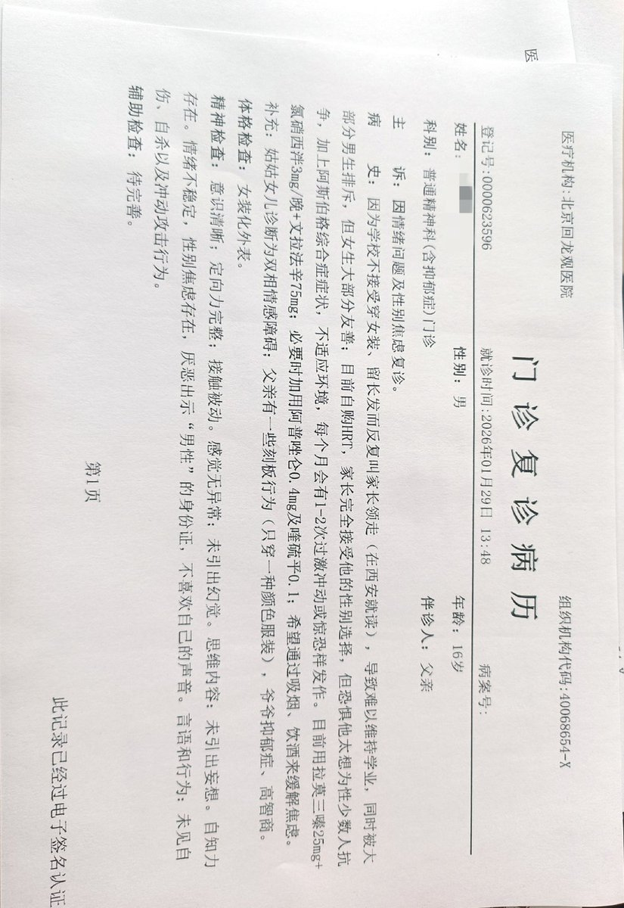
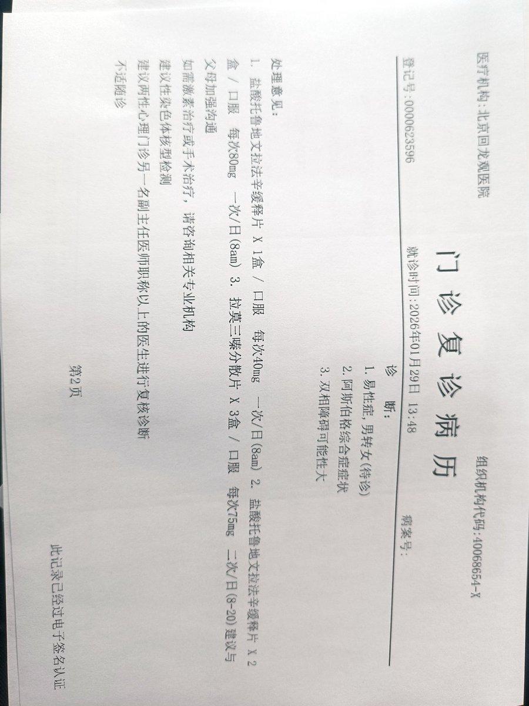
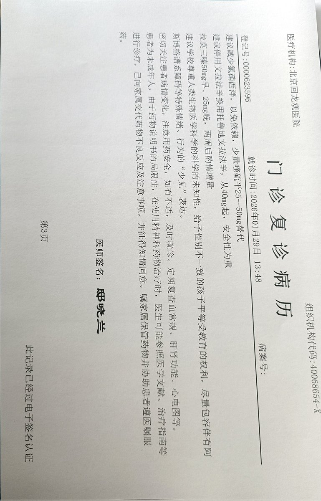

御坂 O.o 雪春📕 (掉fo版)（雪似梅花）
@0502railgun1949
北京其实因为离中央近，这还是相当法治规范的



_
@KS_Nitori
西安-北京，当日往返，买不到硬卧只能坐垃圾桶了（悲
邸晓兰：学校不接受你留头发穿女生校服，学习压力太大了，有没有考虑过找个国际学校呢？
Nitori：国际学校也不接受
父：西安就是这么个鬼环境
Nitori：劳保圣地
邸晓兰：在我们北京，没有哪个学校敢因为这事赶人，你就去硬刚，闹到教委（怒 https://t.co/fS7J5IBasX